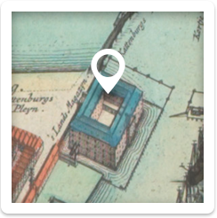

More information
Download map

Download
(528KB)
(528KB)


t’Lants Magesyn_gezien vanuit het oosten, op de voorgrond het Kattenburgerplein
It doesn't seem like much has changed in the last 350 years: There's still a bridge leading to the
Zeemagazijn and there's an East Indiaman docked at Oosterdok.
The Admiralty had good reasons to build ’s Lands Zeemagazijn. First of all, they wanted to keep
all the war supplies in readiness at a single location. Another consideration was 'the high costs of
renting warehouses and cellars,' where 'all this ship equipment and war supplies' were originally
kept. The costs of the construction would be recovered within five years.
NL
EN
